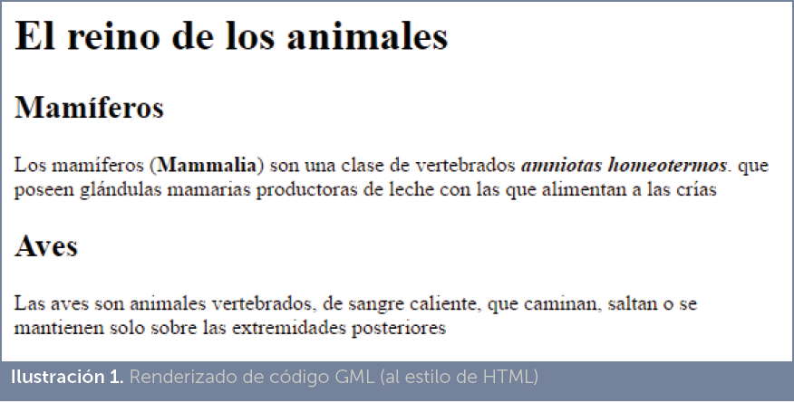
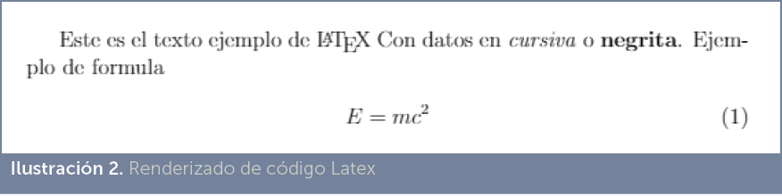
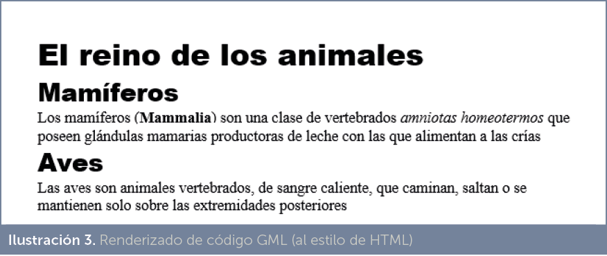

El ordenador es una máquina digital, por lo tanto solo es capaz de representar información utilizando el sistema binario de numeración. Esto obliga a que, para poder almacenar información en un ordenador, previamente haya que codificarla en forma de números binarios.
El problema de los números binarios es que están muy alejados del ser humano; es decir, que las personas no estamos capacitadas para manejar información en binario. Nosotros usamos un sistema numérico decimal para los números y sistemas mucho más complejos para representar otros tipos de información (como el texto, las imágenes, la música,…)
Al principio los ordenadores solo eran capaces de manipular números (de hecho todavía, la CPU, el cerebro de los ordenadores sigue trabajando en binario), pero en la actualidad no hay prácticamente ningún tipo de información que no estemos manipulando a través del ordenador: así manejamos texto, imágenes, música, vídeo,... etc. a través del ordenador. Esto es posible porque se ha conseguido que casi cualquier tipo de información se pueda transformar a binario.
Los seres humanos tenemos la capacidad de diferenciar claramente lo que es un texto de una imagen, lo que es un número de una canción,… Pero en un ordenador todo es más complicado, porque todo es binario.
Ese proceso de transformar la información humana a su equivalente máquina, se conoce como codificación. El principal problema es que no hay una sola forma de codificar, es decir una misma información (una fotografía por ejemplo) se puede codificar a binario de diferentes formas. Aunque hoy día ya tenemos numerosos estándares, todavía sigue siendo uno de los aspectos problemáticos de la informática.
Fundamentalmente la información que un ordenador maneja son números y texto. Pero, curiosamente, a nivel formal solo se consideran datos binarios a la información representable en el ordenador que no es texto (imagen, sonido, vídeo,…); aunque, como ya hemos comentado, en realidad toda la información que maneja un ordenador es binaria, incluido el texto.
Como se ha comentado antes, a cualquier dato codificado en una computadora que no sea texto, se le considera dato binario. Ejemplos de datos binarios son: una canción, un vídeo, una imagen, una aplicación informática o un documento creado con el software Microsoft Word.
La forma de codificar ese tipo de datos a su forma binaria es diferente en cada caso. Por ejemplo, en el caso de las imágenes, cada punto (píxel) de la imagen se codifica utilizando su nivel de rojo, verde y azul. Así por ejemplo el código 11111111 00000000 000000, se correspondería a un píxel de color rojo puro (tiene a tope los niveles de rojo y totalmente apagados los niveles de verde y azul). De modo que una sola imagen requiere millones de dígitos binarios (es decir, millones de bits).
En cualquier caso, sea cual sea la información que estamos codificando en binario, para poder acceder a dicha información, el ordenador necesita un software que sepa como decodificar la misma. Esto significa qué debe de conocer qué significa cada dígito binario para traducirle a su forma original. Eso solo es posible utilizando el mismo software con el que se codificó, o bien otro software capaz de reconocer ese formato.
Por ejemplo, el software Microsoft Word graba los documentos que el usuario crea en formato docx. Si abrimos un documento así creado con un editor de texto (como el Bloc de Notas), no conseguiremos ver el archivo original. Pero si le abrimos con Word sí lo veremos. Word sabe como interpretar la información binaria del archivo. También podemos abrir el archivo con otro software como Google Docs, ya que es capaz de entender esa información.
El texto es quizá la forma más humana de representar información. Antes de la llegada del ordenador, la información se transmitía mediante documentos o libros en papel. Esa forma de transmitir es milenaria y sigue siendo la forma más habitual de transmitir información entre humanos; incluso con la tecnología actual, aplicaciones como twitter o whassap siguen usando el texto como formato fundamental para transmitir información.
En cuanto apareció la informática como la ciencia que se ocupó de la información digital, apareció también el problema de cómo codificar texto en forma de dígitos binarios para hacerlo representable en el ordenador. La forma habitual ha sido codificar cada carácter en una serie de números binarios. Así ejemplo el carácter A se codifica como 01000001 y la B el 01000010 (así se codifican usando el código ASCII).
El problema surgió por la falta de estandarización: la letra A se codificaba de diferente forma dependiendo del sistema que se utilice. El problema ocurre cuan do queremos trasladar la información de un ordenador a otro.
Por ello, poco a poco aparecieron estándares que pretendían conseguir que todo el hardware y el software codificaran los caracteres de la misma forma, independientemente del sistema que utilizáramos.
Este problema sigue ocurriendo actualmente. Así, si escribimos en el Bloc de Notas de Windows un texto que contenga la letra eñe (como España), y luego nos vamos al terminal del sistema y mostramos ese archivo, veremos que la eñe no se lee bien en el terminal. La razón es que Windows utiliza la codificación llamada Windows 1252 y el terminal clásico (procedente del viejo sistema MS-DOS) usa normalmente (en España) la página de códigos CP 850.
El problema de la codificación de texto que hacía incompatibles los documentos de texto entre diferentes sistemas, se palió cuando se ideó en 1967 un código estándar por parte de la ANSI, la agencia de estándares norteamericana, dicho código es el llamado ASCII (American Standard Code for Information Interchange, código estándar americano para el intercambio de información). El código utiliza el alfabeto inglés (que utiliza caracteres latinos) y para codificar todos los posibles caracteres necesarios para escribir en inglés se ideó un sistema de 7 bits (con 7 bits se pueden representar 128 símbolos, suficientes para todas las letras del alfabeto inglés, en minúsculas y mayúsculas, caracteres de puntuación, símbolos especiales e incluso símbolos de control).
El código ASCII es el siguiente:
|
Significado |
¿Control? |
Núm |
Sign. |
¿Control? |
|
|
0 |
Carácter nulo |
Sí |
64 |
@ |
No |
|
1 |
Inicio de Encabezado |
Sí, ctrl-A |
65 |
A |
No |
|
2 |
Inicio de Texto |
Sí, ctrl-B |
66 |
B |
No |
|
3 |
Fin de Texto |
Sí, ctrl-C |
67 |
C |
No |
|
W4 |
Fin de Transmisión |
Sí, ctrl-D |
68 |
D |
No |
|
5 |
Petición |
Sí, ctrl-E |
69 |
E |
No |
|
6 |
Confirmación |
Sí, ctrl-F |
70 |
F |
No |
|
7 |
Timbre |
Sí, ctrl-G |
71 |
G |
No |
|
8 |
Retroceso |
Sí, ctrl-H |
72 |
H |
No |
|
9 |
Tabulación horizontal |
Sí, ctrl-I |
73 |
I |
No |
|
10 |
Alimentación de línea |
Sí, ctrl-J |
74 |
J |
No |
|
11 |
Tabulación Vertical |
Sí, ctrl-K |
75 |
K |
No |
|
12 |
Alimentación de carro |
Sí, ctrl-L |
76 |
L |
No |
|
13 |
Retorno de carro |
Sí, ctrl-M |
77 |
M |
No |
|
14 |
Quitar mayúsculas |
Sí, ctrl-N |
78 |
N |
No |
|
15 |
Poner mayúsculas |
Sí, ctrl-O |
79 |
O |
No |
|
16 |
Data Link Escape |
Sí, ctrl-P |
80 |
P |
No |
|
17 |
Control Disp-1 |
Sí, ctrl-Q |
81 |
Q |
No |
|
18 |
Control Disp-2 |
Sí, ctrl-R |
82 |
R |
No |
|
19 |
Control Disp-3 |
Sí, ctrl-S |
83 |
S |
No |
|
20 |
Control Disp-4 |
Sí, ctrl-T |
84 |
T |
No |
|
21 |
Confirmación negativa |
Sí, ctrl-U |
85 |
U |
No |
|
22 |
Idle síncrono |
Sí, ctrl-V |
86 |
V |
No |
|
23 |
Fin de bloque de transmisión |
Sí, ctrl-W |
87 |
W |
No |
|
24 |
Cancelar |
Sí, ctrl-X |
88 |
X |
No |
|
25 |
Fin de mitad |
Sí, ctrl-Y |
89 |
Y |
No |
|
26 |
Sustituto |
Sí, ctrl-Z |
90 |
Z |
No |
|
27 |
Escape |
Sí, ctrl-[ |
91 |
[ |
No |
|
28 |
EOF |
Sí, ctrl-\ |
92 |
\ |
No |
|
29 |
Separador de Grupo |
Sí, ctrl-] |
93 |
] |
No |
|
30 |
Separador de registro |
Sí, ctrl-^ |
94 |
^ |
No |
|
31 |
Separador de unidad |
Sí, ctrl-_ |
95 |
_ |
No |
|
32 |
Espacio |
No |
96 |
` |
No |
|
33 |
! |
No |
97 |
a |
No |
|
34 |
“ |
No |
98 |
b |
No |
|
35 |
# |
No |
99 |
c |
No |
|
36 |
$ |
No |
100 |
d |
No |
|
37 |
% |
No |
101 |
e |
No |
|
38 |
& |
No |
102 |
f |
No |
|
39 |
‘ |
No |
103 |
g |
No |
|
40 |
( |
No |
104 |
h |
No |
|
41 |
) |
No |
105 |
i |
No |
|
42 |
* |
No |
106 |
j |
No |
|
43 |
+ |
No |
107 |
k |
No |
|
44 |
, |
No |
108 |
l |
No |
|
45 |
- |
No |
109 |
m |
No |
|
46 |
. |
No |
110 |
n |
No |
|
47 |
/ |
No |
111 |
o |
No |
|
48 |
0 |
No |
112 |
p |
No |
|
49 |
1 |
No |
113 |
q |
No |
|
50 |
2 |
No |
114 |
r |
No |
|
51 |
3 |
No |
115 |
s |
No |
|
52 |
4 |
No |
116 |
t |
No |
|
53 |
5 |
No |
117 |
u |
No |
|
54 |
6 |
No |
118 |
v |
No |
|
55 |
7 |
No |
119 |
w |
No |
|
56 |
8 |
No |
120 |
x |
No |
|
57 |
9 |
No |
121 |
y |
No |
|
58 |
: |
No |
122 |
z |
No |
|
59 |
; |
No |
123 |
{ |
No |
|
60 |
< |
No |
124 |
| |
No |
|
61 |
= |
No |
125 |
} |
No |
|
62 |
> |
No |
126 |
~ |
No |
|
63 |
? |
No |
127 |
Borrado |
No |
Pero, en países con lenguas distintas del inglés, surgió el problema de que parte de los símbolos de sus alfabetos quedaban fuera del ASCII (como ocurría con la letra eñe en España).
Por ello se diseñaron códigos de 8 bits que añadían 128 símbolos más y así aparecieron los llamados códigos ASCII extendidos. En ellos, los 128 primeros símbolos son los mismos de la tabla ASCII original y los 128 siguientes se corresponden a símbolos extra. Así por ejemplo el sistema MS-DOS utilizaba el llamado código 437, que incluía símbolos y caracteres de lenguas de Europa Occidental, además de caracteres útiles, como por ejemplo los que permitían hacer marcos y bordes en pantallas de texto. Por su parte, Windows usa el código 1252 y su consola clásica el 850.
8 bits siguen siendo insuficientes para codificar todos los alfabetos del planeta, por lo que cada zona usaba su propia tabla ASCII extendida. Ante el caos consiguiente, la ISO decidió normalizar dichas tablas de códigos para conseguir versiones estándares de los mismos. Lo hizo mediante las siguientes normas (cada una de las cuales definía una tabla de 256 caracteres; siempre los 128 primeros son el ASCII original y los siguientes 128 son los que se utilizan para los símbolos de la zona geográfica concreta)
Este problema sigue existiendo ahora, de modo que en los documentos de texto hay que indicar el sistema de codificación utilizado (el caso más evidente son las páginas web), para saber cómo interpretar los códigos del archivo. Así en 8859_1 el código 245 es el carácter õ y en 8859_2 es el carácter ő
La complicación de las tablas de código se intenta resolver gracias al sistema Unicode. Este sistema pretende aglutinar en una misma tabla de códigos, todos los caracteres de cualquier lengua del planeta. A cambio, cada carácter ya no ocupa un solo byte.
En Unicode a cada carácter se le asigna un número. Los 128 primeros siguen siendo los originales de ASCII para mantener la compatibilidad con los textos ya codificados. Los 128 siguientes se corresponden a los de la tabla ISO-8859_1, de modo que los textos codificados en esa tabla (la habitual de las lenguas de Europa Occidental) son compatibles con Unicode.
Para ello un organismo, también llamado Unicode (http://unicode.org/), participado por numerosas e influyentes empresas informáticas y coordinado por la propia ISO, se encarga de definir la tabla de códigos y además ha definido tres formas fundamentales de codificar los caracteres:
Ejemplo, el texto: 取得cigüeña𐐝 se codificaría de esta forma:
Aunque UTF-8 es más compleja de procesar, en la actualidad es el claro estándar para codificar texto. Todos los sistemas y dispositivos actuales tienen capacidad para codificar de esta forma, por lo que parece que será el estándar definitivo en los años venideros.
[1]Ocupan menos espacio que los archivos de texto, ya que optimizan mejor su codificación a binario (por ejemplo el número 213 ocupa un solo byte y no tres como ocurriría si fuera un texto).
[2]Son más rápidos de manipular por parte del ordenador (se parecen más al lenguaje de la máquina)
[3]Permiten el acceso directo a los datos. Los archivos de texto siempre se manejan de forma secuencial, más lenta
[4]Los datos no son fácilmente interpretables, lo que aporta cierta ocultación al contenido. El contenido de los archivos de texto es fácilmente interpretable.
[5]Los archivos binarios son ideales para almacenar contenido cifrado. Es posible cifrar el texto también, pero los algoritmos de cifrado son más seguros si se usan técnicas no textuales.
[1]Son ideales para almacenar datos para exportar e importar información a cualquier dispositivo electrónico.
[2]Son directamente modificables, sin tener que acudir a software específico.
[3]Su manipulación es más sencilla que la de los archivos binarios.
[4]Los dispositivos de red y software cliente permiten el paso de archivos de texto ya que no son susceptibles de contener virus informáticos.
Los problemas relacionados con el intercambio de información entre aplicaciones y máquinas informáticas es tan viejo como la propia informática.
El problema parte del hecho de haber realizado un determinado trabajo con un software en un determinado ordenador y después querer pasar dicho trabajo a otro software en ese u otro ordenador.
Los archivos binarios tienen la complicación de que para hacer ese proceso, el origen y el destino de los datos deben comprender cómo codificar y decodificar la información. Eso, en muchos casos, ha sido un gran problema que ha obligado a que todos los trabajadores y trabajadoras hayan tenido que adaptarse al software de la empresa. Por otro lado dificulta que las empresas migren a otros sistemas por el miedo a perder los datos.
En la informática actual eso es aún más problemático al tener una necesidad de disponibilidad global del trabajo a través de dispositivos muy distintos como tabletas, smartphones y otros dispositivos portátiles.
Por ello, poco a poco han aparecido formatos binarios de archivo que han sido estándares de facto (aunque la mayoría no han sido reconocidos por ningún organismo de estándares) como por ejemplo el formato documental PDF, el formato de imagen JPEG o el formato de audio MP3.
Pero el problema fundamental sigue estando en el software empresarial. El caso típico podría ser una empresa que utiliza en sus oficinas el software Apache Open Office y luego una persona de la empresa quiere abrir el documento en el que está trabajando en un dispositivo que tiene instalado Microsoft Office. Es probable que no pueda ver el trabajo en ambos dispositivos.
Este problema puede ocurrir incluso con el mismo software pero con versiones distintas (por ejemplo intentar abrir un documento creado con Microsoft Word 2016 en una máquina con Microsoft Word 2001).
De ahí que muchas veces la opción para exportar e importar datos sea utilizar conversores. Software con capacidad de convertir los datos de un formato a otro (por ejemplo de Word a Open Office; de MP3 a MOV de Apple, etc.).
Como ya se ha explicado, hay un formato de archivo que cualquier dispositivo es capaz de entender: el texto. La cuestión es que los archivos llamados de texto, solo son capaces de almacenar texto plano; es decir, solo texto sin indicar ningún formato o añadir información no textual.
Debido a la facilidad de ser leído con cualquier aparato, se intenta que el propio texto sirva para almacenar otros datos, es decir información que no es texto sin más. Evidentemente hay tipos de información prácticamente imposibles de representar en un archivo de texto, pero sí hay trucos para poder representar información de diversos tipos.
Para ello dentro del archivo habrá contenido que no se interpretará como texto sin más, sino que dentro del archivo habrá texto especial, marcado de una forma que permita darle otro significado. Es lo que se conoce como metadatos: datos que sirven para describir otros datos. En el caso de los archivos de texto, son palabras marcadas de forma especial que sirve para describir el texto al que acompaña.
Desde hace muchos años hay tres campos en los que está idea ha funcionado muy bien: en las bases de datos, en los procesadores de texto y, especialmente, en las páginas web. El éxito de Internet ha permitido espolear esta tecnología a otros muchos campos.
Hay que recordar un problema fundamental con el texto: al ser formato tan universal, y ser su contenido tan accesible, es peligroso como fuente para almacenar datos confidenciales, ya que queda fácilmente expuesto a cualquier persona.
Como se ha comentado en el punto anterior, el problema de la exportación de datos ha puesto en entredicho a los archivos binarios como fuente para exportar e importar información.
En su lugar, parece que los archivos de texto poseen menos problemas. Por ello, se ha intentado que los archivos de texto plano (archivos que solo contienen texto y no otros datos binarios) pudieran servir para almacenar otros datos como por ejemplo detalles sobre el formato del propio texto u otras indicaciones.
Los procesadores de texto fueron el primer software en encontrarse con este dilema. Puesto que son programas que sirven para escribir texto parecía que lo lógico era que sus datos se almacenaran como tal. Pero necesitan guardar datos referidos al formato del texto, tamaño de la página, color, tipografía, márgenes, etc. La solución clásica ha sido guardar la información de forma binaria, lo que provoca los ya comentados problemas.
Algunos procesadores de texto optaron por guardar toda la información como texto, haciendo que las indicaciones de formato no se almacenen de forma binaria sino textual. Dichas indicaciones son caracteres marcados de manera especial para que así un programa adecuado pueda traducir dichos caracteres no como texto sino como operaciones que finalmente producirán mostrar el texto del documento de forma adecuada.
La idea del marcado procede del inglés marking up término con el que se referían a la técnica de marcar manuscritos con lápiz de color para hacer anotaciones como por ejemplo la tipografía a emplear en las imprentas. Este mismo término se ha utilizado para los documentos de texto que contienen comandos u anotaciones.
Las posibles anotaciones o indicaciones incluidos en los documentos de texto han dado lugar a lenguajes (entendiendo que en realidad son formatos de documento y no lenguajes en el sentido de los lenguajes de programación de aplicaciones) llamados lenguajes de marcas, lenguajes de marcado o lenguajes de etiquetas.
Se considera a Charles Goldfarb como al padre de los lenguajes de marcas. La razón para esta consideración es, precisamente, su ayuda en la creación del lenguaje GML (Generalized Markup Language).
Golfarb era un investigador de IBM que propuso ideas para que los documentos de texto que incluyeran la posibilidad de marcar el formato del mismo. Al final ayudó a realizar el lenguaje GML de IBM el cual puso los cimientos del futuro SGML (padre de HTML y XML) ideado por el propio Goldfarb y padre de la mayoría de lenguajes de marcas actuales.
Ejemplo de código GML
:h0.El reino de los animales :h1.Mamíferos :p.Los mamíferos (:hp1.Mammalia:ehp1.) son una clase de vertebrados :hp2.amniotas homeotermos:ehp2. que poseen glándulas mamarias productoras de leche con las que alimentan a las crías :h1.Aves :p. Las aves son animales vertebrados, de sangre caliente, que caminan, saltan o se mantienen solo sobre las extremidades posteriores |
Ese código renderizado por un software que interprete ese código obtendría como resultado:

La idea es que los elementos arcados con símbolos “:” y “.” delimiten marcas de formato. Así :h1. significa título principal y :p. significa párrafo.
En la década de los 70 Donald Knuth (uno de los ingenieros informáticos más importantes de la historia, padre del análisis de algoritmos y premio Turing 1974) creó el lenguaje TeX para producir documentos científicos utilizando una tipografía y capacidades que fueran iguales en cualquier computadora, asegurando además una gran calidad en los resultados.
Para ello apoyó a TeX con tipografía especial (fuentes Modern Computer) y un lenguaje de definición de tipos (METAFONT). TeX ha tenido cierto éxito en la comunidad científica gracias a sus 300 comandos que permiten crear documentos con tipos de gran calidad. Requiere de software capaz de convertir el archivo TeX a un formato de impresión.
El éxito de TeX produjo numerosos derivados de los cuales el más popular es LaTeX. LaTeX fue definido en 1984 por Leslie Lamport (premio Turing 2003), aunque después ha sido numerosas veces revisado. Al utilizar comandos de TeX y toda su estructura tipográfica, adquirió rápidamente notoriedad y sigue siendo utilizado para producir documentos con expresiones científicas, de gran calidad. La idea es que los científicos se centren en el contenido y no en la presentación.
Ejemplo de código LaTeX:
\documentclass[12pt]{article} \usepackage{amsmath}
\title{\Ejemplo}
\begin{document}
Este es el texto ejemplo de \LaTeX{}
Con datos en \emph{cursiva} o \textbf{negrita}.
Ejemplo de f\’ormula |
\begin{align}
E &= mc^2 \end{align}
\end{document}
|
Que con un traductor daría lugar al resultado:

RTF es el acrónimo de Rich Text Format (Formato de Texto Enriquecido) un lenguaje ideado por Richard Brodie, Charles Simonyi y David Luebbert (miembros del equipo de desarrollo de Microsoft Word) en 1987 para producir documentos de texto que incluyan anotaciones del formato. Es un formato propiedad de Microsoft, pero reconocido por la mayoría de aplicaciones de proceso de texto.
Actualmente se trata de un formato aceptado para documentos de texto que contengan información sobre el estilo del texto. Se usa mucho como formato de intercambio entre distintos procesadores por su potencia. El procesador de texto Word Pad incorporado dentro del sistema operativo Windows lo utiliza como formato nativo.
Codifica el texto usando 8 bits, para caracteres fuera del ASCII requiere de secuencias de escape lo que, prácticamente, le hace inviable como formato legible de texto en la mayoría de lenguas del planeta. En las últimas versiones de RTF ya sí se ofrece un mayor soporte a Unicode.
Su éxito procede de que las indicaciones de formato son potentes y son más legibles por las personas que el formato nativo de los procesadores de textos, aunque es, como lenguaje de marcado, uno de los más crípticos.
{\rtf\ansicpg1252\deff0\deflang3082
{\fonttbl
{\f0\fcharset0\froman Times New Roman}
{\f1\fcharset0\fswiss Arial Black}
} {\pard \f1\fs48
El reino de los animales \par} {\pard \f1\fs40
Mamíferos \par} |
{\pard \f0\fs25
Los mamíferos ({\b Mammalia}) son una clase de
vertebrados {\i amniotas homeotermos} que poseen
glándulas mamarias productoras de leche con las que alimentan a las crías \par} {\pard \f1\fs40
Aves \par} {\pard \f0\fs25
Las aves son animales vertebrados, de sangre caliente, que caminan, saltan o se mantienen solo sobre las extremidades posteriores \par} } |
Produce el resultado:

Se trata de una mejora muy notable del lenguaje de GML que estandarizaba el lenguaje de marcado y que fue definida finalmente por ISO como estándar mundial en documentos de texto con etiquetas de marcado. Su responsable fue Charles Goldfarb.
Su importancia radica en que es el padre del lenguaje XML y la base sobre la que se sostiene el lenguaje HTML, dos de los lenguajes de marcas más populares de la historia.
En SGML los elementos que contienen indicaciones para el texto se colocan entre símbolos < y >. Las etiquetas se cierran con el signo /. Es decir las reglas fundamentales de los lenguajes de etiquetas actuales ya las había definido SGML.
En realidad (como XML) no es un lenguaje con unas etiquetas concretas, sino que se trata de un lenguaje que sirve para definir lenguajes. Entre los lenguajes definidos mediante SGML, sin duda HTML es el más popular.
Ejemplo:
<articulo> <titulo1>El reino de los animales</titulo1> <titulo2>Mamíferos</titulo2> <normal>Los mamíferos (<negrita>Mammalia</negrita>) son una clase de vertebrados <cursiva>amniotas homeotermos</cursiva>. que poseen glándulas mamarias productoras de leche con las que alimentan a las crías</normal> <titulo2>Aves</titulo2> <normal>Las aves son animales vertebrados, de sangre caliente, que caminan, saltan o se mantienen solo sobre las extremidades posteriores</normal> </articulo> |
Como veremos más adelante, este documento es muy parecido a un documento realizado en XML, de hecho XML es un subconjunto de SGML más restrictivo (es un lenguaje que tiene normas más estrictas).
SGML necesitará definir cómo se debe mostrar los elementos titulo1, titulo2, etc. Ya que son nombres de elementos que habrá que definir. Esa es la prueba de que es un lenguaje para definir tipos de documento.
SGML aportó las etiquetas tal cual las conocemos actualmente gracias al éxito de HTML.
Se trata de un lenguaje de descripción de páginas. De hecho es el más popular para ese fin, siendo el lenguaje más utilizado por los sistemas de impresión de alta gama.
Permite crear documentos en los que se dan indicaciones potentísimas sobre como mostrar información en el dispositivo final. Se inició su desarrollo en 1976 por John Warnock y dos años más tarde se continuo con la empresa Xerox, hasta que en 1985 el propio Warnock funda Adobe Systems y desde esa empresa se continua su desarrollo.
Es en realidad todo un lenguaje de programación que indica la forma en que se debe mostrar la información que puede incluir texto y el tipo de letra del mismo, píxeles individuales y formas vectoriales (líneas, curvas). Sus posibilidades son muy amplias.
Ejemplo1:
%colocar el cursor
100 100 moveto %dibuja cuadrado
100 200 lineto 200 200 lineto 200 100 lineto 100 100 lineto %relleno
stroke |
Tim Bernes Lee utilizó SGML para definir un nuevo lenguaje de etiquetas que llamó Hypertext Markup Language (lenguaje de marcado de hipertexto) para crear documentos transportables a través de Internet en los que fuera posible el hipertexto; es decir la posibilidad que determinadas palabras marcadas de forma especial permitieran abrir un documento relacionado con ellas.
A pesar de tardar en ser aceptado, HTML fue un éxito rotundo y la causa indudable del éxito de Internet. Hoy en día casi todo en Internet se ve a través de documentos HTML, que popularmente se denominan páginas web.
Inicialmente estos documentos se veían con ayuda de intérpretes de texto (como por ejemplo el Lynx de Unix) que simplemente coloreaban el texto y remarcaban el hipertexto. Después el software se mejoró y aparecieron navegadores con capacidad más gráfica para mostrar formatos más avanzados y visuales.
Ejemplo (usando el mismo contenido de los ejemplos anteriores):
<!DOCTYPE html>
<html lang=”es”> <head> <meta charset=”UTF-8”> <title>Document</title> </head> <body> <h1>El reino de los animales</h1> <h2>Mamíferos</h2> <p>Los mamíferos (<strong>Mammalia</strong>) son una clase de vertebrados <em>amniotas homeotermos</em> que poseen glándulas mamarias productoras de leche con las que alimentan a las crías</p> <h2>Aves</h2> <p>Las aves son animales vertebrados, de sangre caliente, que caminan, saltan o se mantienen solo sobre las extremidades posteriores</p> </body> </html> |
Se trata de un subconjunto de SGML ideado para mejorar el propio SGML y con él definir lenguajes de marcado con sintaxis más estricta, pero más entendible.
Ha sido enormemente popular desde finales de los 90 y ha conseguido incorporar numerosos lenguajes a su alrededor para conseguir documentos muy dinámicos y con gran capacidad de formato. Es uno de los formatos de documentos más populares para exportación e importación de datos.
Actualmente está siendo sobrepasado en la mayoría de sus usos por JSON
<?xml version=”1.0” encoding=”UTF-8”?> <nombre>Jorge</nombre> <apellido1>Sánchez</apellido1> <dirección> <calle>C/ Falsa nº 0</calle> <localidad>Palencia</localidad> <código_Postal>34001</código_Postal> <pais>España</pais> </direccion> <teléfonos> <teléfono tipo=”fijo”>999 999 999</teléfono> <teléfono tipo=”móvil”>666 666 666</teléfono> </telefono> |
Se trata de un formato de marcado simple que permite crear documentos sencillos y convertirles en documentos HTML.
Fue creado por John Gruber con la ayuda de Aaron Shwartz. La pretensión de este lenguaje es definir unas normas muy sencillas para crear documentos semejantes a los que se crean mediante el lenguaje HTML.
Ha tenido un éxito muy notable, especialmente desde que fue adoptado por sitios tan populares como GitHub, Reddit o StackExchange para que los usuarios publicaran contenido con formato.
Ejemplo de texto con formato Markdown:
# El reino de los animales ## Mamíferos Los mamíferos (**Mammalia**) son una clase de vertebrados *amniotas homeotermos*. que poseen glándulas mamarias productoras de leche con las que alimentan a las crías ## Aves Las aves son animales vertebrados, de sangre caliente, que caminan, saltan o se mantienen solo sobre las extremidades posteriores |
Este código genera el mismo resultado que el código mostrado en el apartado de HTML, pero se percibe claramente su sencillez.
Abreviatura de JavaScript Object Notation, Se trata de una notación de datos procedente del lenguaje JavaScript estándar (concretamente en la versión ECMAScript de 1999). En el año 2002 se le daba soporte desde muchos de los navegadores y su fama ha sido tal que ahora se ha convertido en una notación independiente de JavaScript que compite claramente con XML en funcionalidad.
Las razones de su éxito se deben a su versatilidad, ya que permiten definir datos complejos, como arrays o código de funciones, elementos pertenecientes al mundo de la programación de aplicaciones. El éxito de JavaScript junto a la versatilidad comentada, le han convertido en el lenguaje de marcado más popular para almacenar datos.
En JSON, el texto se divide en datos y metadatos. De modo que el símbolo de los dos puntos separa el metadato del dato. Por otro lado, los símbolos de llave y corchete permiten agrupar de diversas formas los datos.
Ejemplo de código JSON:
{
“nombre”: “Jorge”, “apellido1”: “Sánchez”, “dirección”: {
“calle”: “C/ Falsa nº 0”, “localidad”: “Palencia”, “código Postal”: 34001, “país”:”España” }, “teléfonos”: [ {
“tipo”: “fijo”, “número”: “999 999 999” }, {
“tipo”: “móvil”, “number”: “666 666 666” } ] } |
1 Tomado de http://en.wikipedia.org/wiki/PostScript